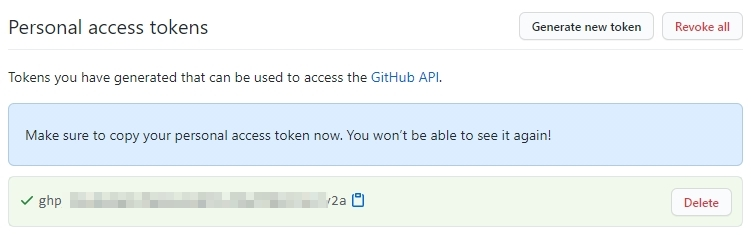

grep 搜索檔案內容指令
常用參數
| 參數 | 說明 |
|---|---|
| -i | 搜索時忽略大小寫問題 |
範例
grep -i "keyword" file name
當你在 Git Bash 執行 git push 時發生 remote 錯誤...
閱讀更多
| 參數 | 說明 |
|---|---|
| -i | 搜索時忽略大小寫問題 |
grep -i "keyword" file name| 參數 | 說明 |
|---|---|
| -c | 打包檔案 |
| -x | 解開壓縮檔 |
| -t | 檢視壓縮檔的內容 |
| -z | 使用 gzip 壓縮 |
| -v | 顯示壓縮/解壓縮執行過程 |
| -P | 使用絕對路徑 |
| -f | 指定壓縮檔後的檔案名稱 (此參數的後面要接檔案名稱，通常是把 f 參數放最後或是與分開使用) |
tar -czvf 壓縮檔名稱.tgz 來源檔案tar -xzvf 壓縮檔名稱.tgz| 參數 | 說明 |
|---|---|
| -R | 遞迴變更(所有檔案及其子目錄) |
| 權限 | 基本權限字元為 -rwxrwxrwx (共9個)。順序為三個角色 owner group others，各別的角色分別擁有三個執行權限 read write execute 而組成。 權限的分數為: 4: r(read) 2: w(write) 1: x(execute) 例如: 當權限為 -rwxr-xr-x 分數則是 755 (owner擁有全部權限，group與others則有讀與執行的權限)。
|
# 改權限為 -rwxr-xr--
chmod 754 檔案名稱chmod -R 754 目錄名稱| 參數 | 說明 |
|---|---|
| -R | 遞迴變更(所有檔案及其子目錄) |
chown 使用者:使用者群組 檔案名稱chown -R 使用者:使用者群組 目錄名稱# 原檔案擁有者為root，改為www-data
chown www-data:www-data 檔案名稱當你在執行 git push 並且確定在 Git Bash 輸入對的帳號密碼，但仍出現下列訊息:
remote: Invalid username or password.
fatal: Authentication failed for 'https://github.com/你的帳號/blog.git/'
其錯誤原因要檢查登入方式是不是有設定了兩步驟驗證(Two-factor authentication)。
在 GitHub 頁面點選個人頭像，再按下列選單順序點到最後的 Personal access tokens 選項。
Account settings / Developer settings / Personal access tokens點選 Generate new token 鈕，建立新的 token。
在 New personal access token 頁面上:
請妥善保存 token，token 生成後只會出現在畫面一次，之後若忘記或到期就需要再重新生成一個。
之後這組 token 就可以取代登入密碼，來執行 git 的相關動作了。
Just a mini blog. A little bit about my articles, content, or something else entirely.